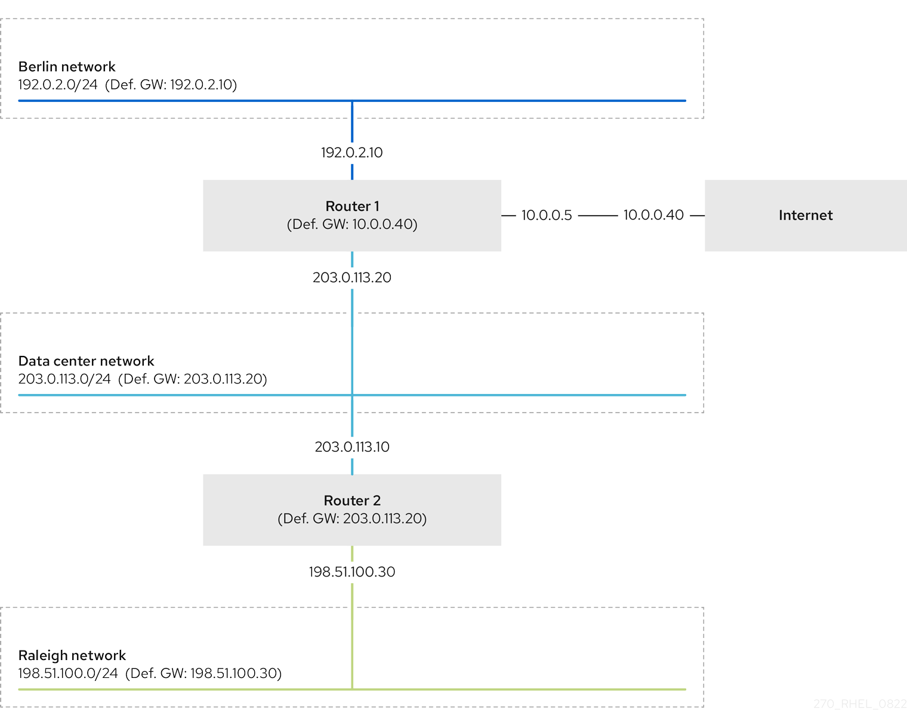

Example of a network that requires static routes
You require static routes in this example because not all IP networks are directly connected through one router. Without the static routes, some networks cannot communicate with each other. Additionally, traffic from some networks flows only in one direction.
The network topology in this example is artificial and only used to explain the concept of static routing. It is not a recommended topology in production environments.
For a functioning communication among all networks in this example, configure a static route to Raleigh (198.51.100.0/24) with next the hop Router 2 (203.0.113.10). The IP address of the next hop is the one of Router 2 in the data center network (203.0.113.0/24).
You can configure the static route as follows:
-
For a simplified configuration, set this static route only on Router 1. However, this increases the traffic on Router 1 because hosts from the data center (
203.0.113.0/24) send traffic to Raleigh (198.51.100.0/24) always through Router 1 to Router 2. -
For a more complex configuration, configure this static route on all hosts in the data center (
203.0.113.0/24). All hosts in this subnet then send traffic directly to Router 2 (203.0.113.10) that is closer to Raleigh (198.51.100.0/24).
For more details between which networks traffic flows or not, see the explanations below the diagram.

In case that the required static routes are not configured, the following are the situations in which the communication works and when it does not:
-
Hosts in the Berlin network (
192.0.2.0/24):-
Can communicate with other hosts in the same subnet because they are directly connected.
-
Can communicate with the internet because Router 1 is in the Berlin network (
192.0.2.0/24) and has a default gateway, which leads to the internet. -
Can communicate with the data center network (
203.0.113.0/24) because Router 1 has interfaces in both the Berlin (192.0.2.0/24) and the data center (203.0.113.0/24) networks. -
Cannot communicate with the Raleigh network (
198.51.100.0/24) because Router 1 has no interface in this network. Therefore, Router 1 sends the traffic to its own default gateway (internet).
-
-
Hosts in the data center network (
203.0.113.0/24):-
Can communicate with other hosts in the same subnet because they are directly connected.
-
Can communicate with the internet because they have their default gateway set to Router 1, and Router 1 has interfaces in both networks, the data center (
203.0.113.0/24) and to the internet. -
Can communicate with the Berlin network (
192.0.2.0/24) because they have their default gateway set to Router 1, and Router 1 has interfaces in both the data center (203.0.113.0/24) and the Berlin (192.0.2.0/24) networks. -
Cannot communicate with the Raleigh network (
198.51.100.0/24) because the data center network has no interface in this network. Therefore, hosts in the data center (203.0.113.0/24) send traffic to their default gateway (Router 1). Router 1 also has no interface in the Raleigh network (198.51.100.0/24) and, as a result, Router 1 sends this traffic to its own default gateway (internet).
-
-
Hosts in the Raleigh network (
198.51.100.0/24):-
Can communicate with other hosts in the same subnet because they are directly connected.
-
Cannot communicate with hosts on the internet. Router 2 sends the traffic to Router 1 because of the default gateway settings. The actual behavior of Router 1 depends on the reverse path filter (
rp_filter) system control (sysctl) setting. By default on RHEL, Router 1 drops the outgoing traffic instead of routing it to the internet. However, regardless of the configured behavior, communication is not possible without the static route. -
Cannot communicate with the data center network (
203.0.113.0/24). The outgoing traffic reaches the destination through Router 2 because of the default gateway setting. However, replies to packets do not reach the sender because hosts in the data center network (203.0.113.0/24) send replies to their default gateway (Router 1). Router 1 then sends the traffic to the internet. -
Cannot communicate with the Berlin network (
192.0.2.0/24). Router 2 sends the traffic to Router 1 because of the default gateway settings. The actual behavior of Router 1 depends on thesysctlsettingrp_filter. By default on RHEL, Router 1 drops the outgoing traffic instead of sending it to the Berlin network (192.0.2.0/24). However, regardless of the configured behavior, communication is not possible without the static route.
-
In addition to configuring the static routes, you must enable IP forwarding on both routers.
Additional resources